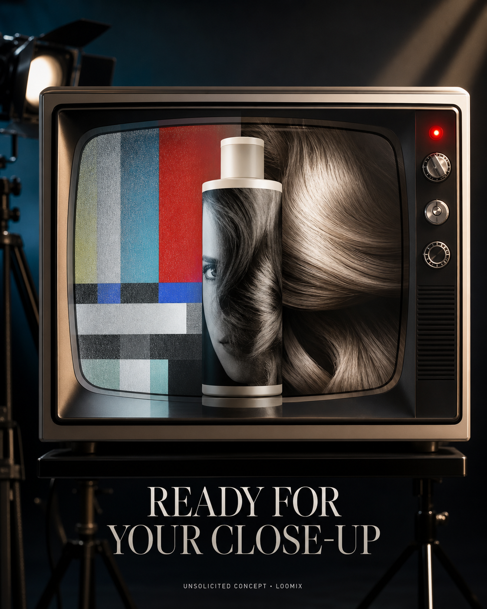

Concept created by LoomixUnsolicited concept
R+CoReels + TikTok9:168 seconds
TELEVISION Shampoo — Ready for Your Close-Up
An analog test screen wipes into a cinematic macro of camera-ready hair, turning static into body, softness, smoothness, and shine.
Create the full adOpen product pageAI-generated visual direction

Concept art for discussion only. Product and brand belong to R+Co.
Hooks
Ready for your close-up.Turn off the static.Camera-ready starts in the shower.
Six-shot storyboard
- Open on analog color bars and static.
- Reveal the shampoo bottle inside the TV.
- Tap the red recording light.
- Wipe static away with a glossy hair curve.
- Fill the screen with a polished close-up.
- End on bottle, REC light, hook, and CTA.
Caption
A broadcast-format transformation that makes “camera-ready hair” feel native to the product name and social screen.
LoomixLoomix turns one product photo into a storyboard, short video direction, captions, and ready-to-post ad copy.